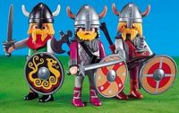

De: La Frikipedia, la enciclopedia extremadamente seria.
De: La Frikipedia, la enciclopedia extremadamente seria. De: La Frikipedia, la enciclopedia extremadamente seria.
| De la serie Países del planeta tierra: | |||||
| Norguega | |||||
|---|---|---|---|---|---|
| |||||
| Lema: Fungen der Norbert | |||||
| Himno: Pakanajuhla
| |||||
| 
| |||||
| Capital | Mordor City | ||||
| Mayor ciudad | Mordor City | ||||
| Lenguas oficiales | Growl | ||||
| Gobierno | Anarquia Blackera | ||||
| Blacker Supremo | Øystein Aarseth | ||||
| Área | tan arriba que ya casi empieza a bajar | ||||
| Población | Noruega es como un gran piso patera | ||||
| Moneda | Coronas Noruegas | ||||
| Zona horaria | GTM +5 | ||||
| Dominio Internet | .no | ||||
| Código telefónico | no hay telefonos, se comunican a base de gritos y soplacuernos
| ||||
| País de el techo del mundo, se sospecha que viven seres humanos | |||||
Noruega es un país de Europa, cuna del mejor black metal. Noruega se distingue, entre otras muchas cosas que desconocemos por completo, por ser el país más orgullosos del mundo, de ahí su nombre "No Ruega".
La población noruega se compone de vikingos y salmones, repartidos aproximadamente al 50%. Los noruegos son grandes navegadores por sus antepasados vikingos, quienes navegaban y trolleaban las costas usando Opera. Suelen invadir los territorios españoles durante los meses de verano. Debido a el efecto de ciertas bebidas (probablemente alcohólicas) los vikingos noruegos se muestran mucho más cariñosos con los salmones. Suelen procrear con ellos durante el verano únicamente.
Hace muchos años, cuando en la tierra no había nada, en Noruega tampoco, despues de otros muchos años llegó Adam y Geva Eva, y dijeron:
Eva: Ya que dios nos saco del paraíso, ¿que tal si hacemos una tribu de gente rara con cuernos en la cabeza y siguiendo otra religión para que se enfade?
Adam: Gran idea Eva, asi tal vez considere que fue un error sacarnos!! (dejame decirte que nunca dios considero nada despues de eso, y sigue sin considerar que hizo algun error)
Después de eso, cuando existia la Antigua Roma, la atacaban para que no llamaran más la atencion de dios que ellos, pero Dios los castigó y se murieron de hambre la mayoría.
Ya sin nada, el país estaba vacío, solo quedaban dos personas, Linda Hermosa y Michael Jackson I, los dos se permanecieron comiendo gatos, criando gatos para otras generaciones, defendiendo el pais con un ejercito de gatos, hasta que Roma atacó con perros y bueno, tú sabes lo que pasó. Al montarse ahi la de san quintín muriron los dos matados esos que quedaban y Noruega volvió a ser un pedazo de tierra dóndehacía mucho frio. Pero todo estaba destinado a cambiar gracias al Noruego Primigenio.
Hasta aquí se conocía a los Noruegos como los Pre-vikingos que eran unos mierdas comparados con los de ahora, los Noruegos descendientes del Noruego Primigenio.
Por todos es sabido que Noruega se fundó en el siglo XII en algún lugar entre Cuenca y Valdepeñas. Ahi habitaba el Noruego Primigenio junto con su única descendencia y su mano derecha. Este ser había aprendido la extraña cualidad de metamorfosearse en vaca para Dominar el mundo si las cosas se ponían chungas (suerte que no lo hizo).
El Noruego Primigenio junto con su descendencia y su mano derecha viajó al norte hasta la antigua Noruega que invadieron los romanos y se instaló alli y tuvo hijos y fundaron esta letal civilización que dentro de muchos siglos Dominaría el Mundo.
En la Segunda Guerra Mundial, todos los que estaban arriba de Alemania se fueron llorando a Suecia, y los Suecos odian a los inmigrantes y ellos (los que son inteligentes, osea los Suecos) se fueron a Noruega, junto con algunos Dinamarcos pero ellos no sabían lo que estaba pasando en Noruega. Se creían que aun era ese pedazo de mierda del siglo XI, así que los Noruegos se los cargaron a todos o simplemente les amputaron un brazo. Y los que consiguieron sobrevivir fueron corriendo a su casa a esconderse debajo de su cama. De ahí viene la canción infantil:

|
Duérmete niño, duérmete ya y si no te duermes lo pasarás mal. Duérmete niño, duérmete ya o vendrá el Noruego y te descuartizará. MUAHAHA. El noruego te comerá. MUAHAHA. Si no te duermes, la cuna caerá y a merced del noruego te quedarás. | 
|
| Nana Popular |
Lo que más nos temíamos ha sucedido. El Noruego Primigenio transmitió su saber a sus descendientes y asi de generación en generación, y ahora los noruegos han Dominado el Mundo. Y ha pasado todo de la manera menos esperada.
En muchos países llegaban noruegos en motos que hacían señales para que salieran 5.000 hombres como ellos, pero hombres, no mierdas y así dominaron Europa después Asia y después el resto del mundo. Los únicos a los que este cambio no les ha afectado han sido los jebis puesto que todos sabemos que son descendientes directos de los Noruegos.
Y si querido lector ye preguntas como podemos evitar esto la Frikipedia responderá a tus dudas. Solo hay una manera y es viajar en el tiempo hasta el siglo XII y matar al Noruego Primigenio y evitar asi que se fundé la civilización de estos cabrones. Y si aun estás lo suficiente loco para intertarlo te diremos que entre Cuenca y Valdepeñas hay cosas tan raras como piñas, tomates pequeños, piedras, arbustos, ñurdos, escarpias, árboles, casas sin puertas ni ventanas, vallas, Desoxiribonucleótidos, farolas y hagua.
Los noruegos se caracterizan por tener una gran cultura, en cuanto a bebidas alcholicas son los terceros consumidores mundiales (por detrás de Rusia y Irlanda), pero lo que cabe destacar de esta cultura es su música.
La música noruega está basada en el jebi pero también tienen otros estilos de música para consumir. Uno de los estilos más famosos es el Otchpungmuou (traducido del Noruego: Improvisar con el entorno) que consiste en mirar a tu alrededor y hacer una canción con lo que ves.
|
|
Yo solo veo un montón de árboles. Árboles del medievo que juntos forman un bosque. No lo encontrarás ¡CHAS! en otra época, porque son árboles del medievo y no están en el siglo 21. Árboles, árboles del medievo que juntos forman un bosque. ¡Piña, tomate, escarpia, arbusto, piedra, valla, farola, árbol! Veo dos sillas y les llamo desoxiribonucleótidos, veo dos árboles y les clavo escarpias para adornar este bosque. Árboles, árboles del medievo que juntos forman un bosque |
|
| Otchpungmuou Popular |
No tienen restaurantes ni cines ni restaurantes ni todas esas marikadas que nos divierten :( por eso son unos amargados que todo lo tienen planeado hasta para comersen un pan
Normalmente estas canciones no acababan si se cantaban en público puesto que hinchaban la cara a hostias del cantante, por eso el jebi se convirtió en la música oficial.
  Imperios de Europa Imperios de Europa
|
|---|
| Eslovaquia |
Autor(es):